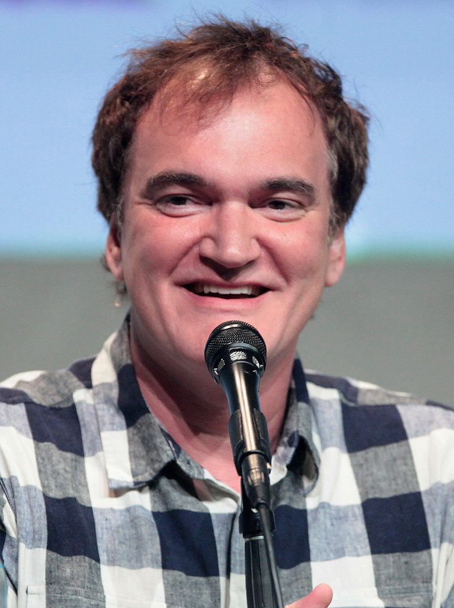

Кве́нтин Джеро́м Таранти́но (англ. Quentin Jerome Tarantino; род. 27 марта 1963 года, Ноксвилл, Теннесси, США) — американский кинорежиссёр, сценарист, актёр, кинопродюсер, кинооператор. Один из наиболее ярких представителей постмодернизма в кинематографе. Фильмы Тарантино отличаются нелинейной структурой повествования, переосмыслением культурно-исторического процесса, использованием готовых форм и эстетизацией насилия.
В отличие от предыдущих поколений американских режиссёров, Тарантино изучал своё ремесло самостоятельно, будучи клерком в видеосалоне. Его кинематографический вкус развивался под влиянием оригинального сплава поп-культуры и артхаусного кино. Всем фильмам Тарантино присущ особый почерк, благодаря которому невозможно спутать его фильмы с работами других режиссёров. Прежде всего, его фильмы отличаются нелинейной структурой (часто использует нетрадиционное повествование, например, возвращение к прошлым событиям в «Бешеных псах», нелинейность повествования в «Криминальном чтиве» или повествование по главам в «Убить Билла» и «Бесславных ублюдках», «Омерзительная восьмёрка»), эстетизацией насилия и долгими диалогами. Также в них присутствует огромное количество ссылок на культовые для самого Квентина кинофильмы. Почти во всех его фильмах (кроме «Доказательства смерти», но включая «Настоящую любовь») содержится «Мексиканский тупик», сцена, в которой трое или больше героев направляют оружие друг на друга одновременно. В фильмах есть хорошо имитированные сцены с отрезанием частей рук героев в чрезвычайно крупных планах, присутствуют и наркотики, а также жестокость и насилие, большая часть которого находится за кадром. Хотя Тарантино использует эти элементы в своих фильмах, в реальной жизни он терпеть не может насилие. Тарантино иногда прибегает к использованию длинного крупного плана лица человека в то время, когда кто-то ещё говорит за кадром. Использует псевдонимы и клички почти во всех своих фильмах. Героини часто носят чёрно-белый брючный костюм. Нередко создаёт вымышленные бренды из-за неприязни к размещению рекламы в кинофильмах. Например, в большинстве его фильмов присутствуют сигареты «Красное яблоко». Главный герой его фильмов совершил хотя бы одно крупное преступление (чаще всего — убийство, в некоторых фильмах — ограбление) (за исключением эпизода в фильме «Четыре комнаты»). Персонажи часто ведут беседу в кафе или в ресторане, при этом разговаривая о еде. В его историях регулярно проскальзывают сцены убийства родителей малолетних детей. Так, например, в «Бешеных псах» полицейский просит: «Не убивай меня, у меня маленький ребёнок!», а после его хладнокровно расстреливают. В «Убить Билла» Беатрикс убивает Верниту Грин на глазах у её маленькой дочери Никки, родителей О-Рен Ишии, когда она была ребёнком, также убили на её глазах. В «Бесславных ублюдках» Бриджит фон Хаммерсмарк убивает новоиспечённого отца малыша Макса, а в «Джанго Освобождённом» Джанго, будучи охотником за головами, убивает разыскиваемого преступника на глазах у его сына. Сам режиссёр говорит, что во всех его фильмах есть одна общая черта, с помощью которой он завоевал множество поклонников по всему миру, — всем его фильмам присуще особое чувство юмора, которое заставляет зрителей смеяться над такими вещами, которые априори не являются забавными. Чаще всего Тарантино работает с такими актёрами, как Харви Кейтель, Тим Рот, Майкл Мэдсен, Ума Турман, Сэмюэл Л. Джексон. Также в каждом его фильме, за исключением «Доказательства смерти», играет кто-то из тех актёров, которые играли в фильме Мартина Скорсезе «Злые улицы». Почти во всех фильмах Тарантино присутствуют кадры с женскими ступнями крупным планом («Криминальное чтиво», «Джеки Браун», «Убить Билла», «Доказательство смерти», «Бесславные ублюдки», «Однажды в… Голливуде») либо действия, непосредственно связанные с этой частью тела (разговор о массаже ступней в «Криминальном чтиве», сцена с танцем Сальмы Хайек в «От заката до рассвета», потеря Черри Дарлинг ноги и её последующее «протезирование» в «Планете страха»). В 2018 году производное прилагательное от фамилии режиссёра Tarantinoesque было включено в Оксфордский словарь английского языка. Список самых известных фильмов: